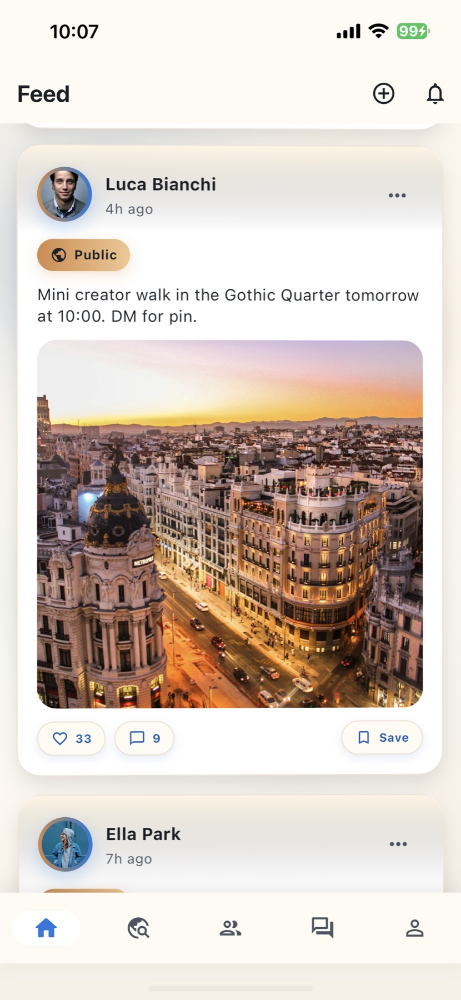

01 / Feed + Stories
Core social surface shipped early for investor and user walkthroughs
Implemented feed, story rail, and quick post composer so the product was usable from the first investor and user walkthroughs.
Product Development
For founders who need a dependable first product release they can put in front of users, investors, and partners.
Who this is for
What I deliver
Selected product slices
Implemented feed, story rail, and quick post composer so the product was usable from the first investor and user walkthroughs.

Built nearby suggestions with quick friend actions to test conversion from browsing to actual connection behavior.
The working flow linked presence visibility and people search so users could discover contacts without exposing precise location data.

Structured post cards with reactions and save actions to support repeat use and continued engagement.
Process
Turn the product goal into a clear scope, user journey, and delivery target.
Develop the interaction, logic, data, and interface needed for a coherent release.
Review working software early, adjust scope intelligently, and keep delivery moving.
Refine the UX, edge cases, and presentation quality that users will encounter.
Hand over a release-ready product with a clear path for continued development.
Contact
Send the product goal, core users, and delivery target. I can shape the scope and build the first release.